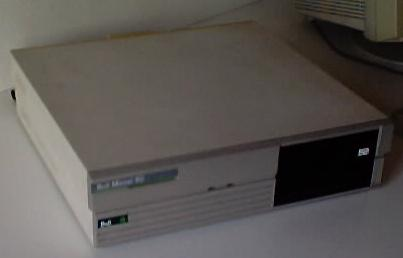

More Images: Image1 Image2 Image3
It was given to me by the teacher of my high school.
| Address | UART | Speed | Format | IRQ | |
|---|---|---|---|---|---|
| COM1 | 03F8 | 16450 | 2400 | 8N1 | 4 |
| Address | IRQ | |
|---|---|---|
| LPT1 | 0378 |
As the video card is integrated in the mainboard, the computer has a switch in its back that lets you choose MONOCHROME or COLOR video output.
You need a special boot disk for entering CMOS configuration. This is the image of the floppy (360Kb): Image. There were some CRC errors when dumping it, but the disk works; then the image might work too.
The CMOS Setup Disk offers the options in 4 languages: ENGLISH, GERMAN, SPANISH and ITALIAN.
The disk offers many options about displaying/modifying CMOS RAM contents.
These files can give more detailed information about the computer and its configuration, and also some benchmarking.
At the time of doing the log, the system was started up changing the 360K FD for a 1.44Mb one, and using a Caldera Opendos 7.02 boot disk.
It may have a problem with its internal monochrome video card, because a column in each char fails. Concretely, the 2nd column of each char is wiped (black). I can't remeber if it happened in the first time I turned the computer on, because I used it with a VGA ISA16 Card.
Started 04/08/2001 / Updated 2002-03-16 23:16:26.000000000 +0100
[top] [home] [Software utilities]
Viric's Web Site / Webmaster: viric / Started 03/08/2001 / Updated mié sep 17 01:30:41 CEST 2003{kind=link}
{kind=link}
{kind=link}